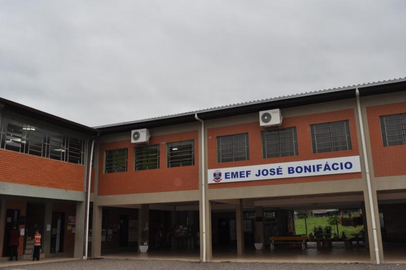
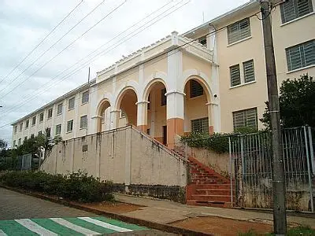

Sobre o Projeto
Este site tem como objetivo divulgar o projeto +Ciência nas Escolas, uma iniciativa lançada pelo Ministério da Educação (MEC), que promove integração entre ciência, educação e tecnologia nas escolas públicas de Machado, Paraguaçu e Poço Fundo.
Escolas Participantes
Escola Estadual Gabriel Odorico (Machado)
Escola Estadual José Bonifácio (Poço Fundo)

Escola Estadual Padre Piccinini (Paraguaçu)

Escola Estadual Rubens Garcia (Machado)

Objetivos do Projeto
🔬 Ensino Inovador
Fortalecer o ensino de Ciências por meio de práticas inovadoras.
📢 Divulgação
Divulgar ações e resultados das atividades realizadas nas escolas participantes.
🌐 Acesso à Informação
Facilitar o acesso da comunidade escolar às informações do projeto.
💡 Engajamento
Estimular o engajamento dos estudantes com tecnologia e ciência.